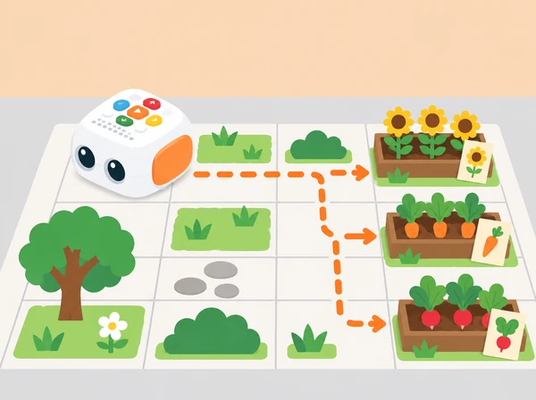

Com podem preparar una ruta per a cada llavor de paper i contar què necessitarà la planta quan comence a créixer?
El grup prepara un hort escolar imaginari amb bancals de flors, hortalisses i plantes aromàtiques pròpies del context local. Tale-Bot transporta una fitxa de llavor —no una llavor real— des del viver dibuixat fins al bancal triat. A cada parada, l’equip conta què podria passar a continuació i quines condicions ajudaran una planta a créixer: llum, aigua, aire i condicions adequades per a l’espècie. Les necessitats concretes varien entre plantes; no totes es planten o es reguen de la mateixa manera.
Aprenentatges: seqüenciar ordres, orientar-se en una graella, anticipar el destí, revisar una instrucció, observar plantes de manera respectuosa i ordenar una explicació temporal: llavor, germinació, creixement i cura. El robot segueix les ordres introduïdes; no sap què necessita la llavor ni pot comprovar si una planta està sana.
Prepareu un Tale-Bot Pro carregat, una quadrícula gran amb un punt de partida i tres bancals, targetes pròpies de plantes i fitxes planes de llavor, pictogrames de llum/aigua/aire/cura, fletxes grans i un full d’observació amb espai per dibuixar. Abans de la classe, comproveu que les caselles coincidisquen aproximadament amb un moviment del robot. En el sistema de targetes oficial, les ordres bàsiques inclouen avançar o retrocedir aproximadament 10 cm i girar 90°; verifiqueu el comportament del model del centre sobre la superfície que fareu servir.
Trieu fotos pròpies o autoritzades de plantes de l’hort o l’entorn. No colliu plantes ni demaneu tocar terra, fertilitzants o eines. No feu servir llavors reals si hi ha risc d’ingestió, al·lèrgia o confusió amb aliments; aquesta SDA funciona completament amb targetes. Els bancals es dibuixen amb espai suficient perquè el robot gire i perquè les fitxes no bloquegen els botons ni les rodes.
Vocabulari: llavor, bancal, hort, germinar, créixer, llum, aigua, aire, davant, darrere, gir, ordre i ruta. Acompanyeu les paraules amb gestos i pictogrames i diferencieu «ho hem observat» de «pensem que passarà».
Observeu una planta del pati si és accessible sense eixir dels espais permesos o mireu fotografies de l’hort escolar i de conreus de l’entorn valencià. Pregunteu què veuen directament: fulles, tija, flor, ombra, terra o recipient. Després, separeu les idees que són observacions de les que són prediccions: «veig una fulla nova» davant de «potser necessita més llum». Eviteu arrancar fulles o tocar plantes desconegudes.
En assemblea, trieu tres bancals ficticis i associeu-los a imatges: flor, carlota i rave, per exemple. Cada equip crea una fitxa de llavor de paper i proposa una pregunta de cura que es puga investigar més endavant amb una persona adulta. Evidència: dibuix d’una planta, una observació directa o documentada i una pregunta. Preguntes docents: «Què podem veure sense tocar? Què ens agradaria investigar abans de decidir com cuidar-la?»
Col·loqueu el viver a la casella inicial i els tres bancals en destinacions diferents. Feu que una fitxa de paper avance sobre el mapa abans d’usar Tale-Bot. L’alumnat selecciona una destinació i ordena fletxes o targetes d’instrucció per arribar-hi; assenyala l’orientació inicial i prediu on pararà el robot. Conteu cada moviment necessari i marqueu amb una fitxa els girs, que sovint són més difícils d’anticipar.
Compareu dues rutes possibles al mateix bancal: quina evita un obstacle ampli?, quina usa menys instruccions?, quina és més fàcil de llegir per una altra parella? No cal que la ruta més curta siga la millor si confon la seqüència. Evidència: mapa amb inici/destí, dues seqüències alternatives i una predicció de casella final. Preguntes docents: «Cap a on mira Tale-Bot al començament? Què hem de fer abans de dir-li que gire?»
Introduïu les instruccions amb els botons de Tale-Bot en l’ordre planificat. Un infant dicta o assenyala la primera seqüència, una altra persona la comprova amb les targetes i una tercera observa la ruta. Feu primer un trajecte curt fins a un bancal. Si el robot no acaba on s’esperava, torneu a situar-lo a l’inici i compareu posició, orientació, nombre de moviments i girs. Esborreu o corregiu només les ordres necessàries i executeu de nou.
Quan la primera destinació funciona, repetiu el procés per a un altre bancal. En arribar, col·loqueu la fitxa de llavor al seu lloc i trieu entre pictogrames quines condicions podrien ajudar una planta d’eixa classe. No programeu cap diagnòstic ni reg automàtic. Evidència: una seqüència revisada i una explicació del pas que s’ha corregit. Preguntes docents: «Quina és l’última casella correcta? Quin canvi provaràs ara?»
Creeu una història oral, gràfica o dictada amb quatre moments: llavor al viver, arribada al bancal, germinació i planta en creixement. A cada parada, una persona afegeix una imatge o un pictograma de llum, aigua, aire o cura. Expliqueu que són idees generals; les necessitats reals depenen de la planta i de l’observació concreta. Una altra parella reconstrueix l’ordre del relat seguint el mapa.
Tanqueu amb una proposta de cura per a l’hort del centre que puga comprovar una persona responsable: observar abans de regar, respectar la zona de pas o preguntar quina planta s’hi cultiva. Si l’escola no té hort, la proposta queda com a disseny o pregunta per investigar, no com una instrucció per plantar sense permís. Evidència: ruta final, història de quatre moments i una pregunta o proposta de cura validable. Preguntes docents: «Què sabem d’aquesta planta? Què hauríem de preguntar o observar abans d’actuar?»
Guardeu el mapa, les targetes d’ordres, la seqüència corregida i el relat en quatre moments. Observeu si l’alumnat:
No s’avalua memoritzar una llista universal de cures ni encertar totes les rutes al primer intent. Es valora explicar què s’ha provat i com s’ha revisat amb el mapa.
Oferiu caselles grans i contrastades, un mapa tàctil amb vores suaus i pictogrames per a les ordres. Es pot participar dibuixant, triant destinació, dictant la seqüència, comprovant una predicció o observant la prova; no cal manipular el robot per demostrar aprenentatge. Roteu els rols sense pressa i doneu temps d’espera. Tota l’activitat es pot fer en aula amb fotografies i targetes. No es manipulen plantes, llavors ni eines si el centre no ho ha autoritzat.
La proposta s’inspira en l’ús de mapes, blocs tangibles de moviment, destinacions i narració que apareix en les targetes oficials d’activitat de Tale-Bot Pro i en l’activitat de Coding Set Delivery Animals. El viver, l’hort, les preguntes de cura i els materials gràfics són propis. Les ordres es comproven amb el model físic i la fitxa evita atribuir coneixements botànics al robot.